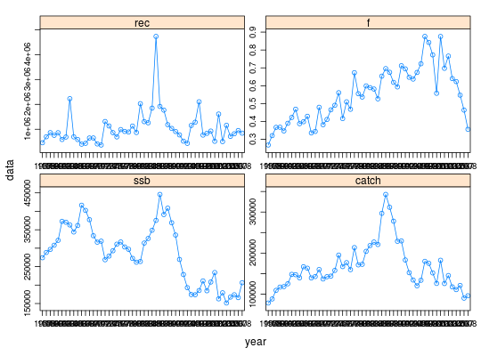

FLQuants is a list of FLQuant objects. It is very
similar to the standard list class. It implements a lock mechanism
that, when turned on, does not allow the user to increase or decrease the
object length. The elements of FLQuants must all be of class
FLQuant.
FLQuants(object, ...) # S4 method for ANY FLQuants(object, ...) # S4 method for FLComp FLQuants(object, ...) # S4 method for missing FLQuants(object, ...) # S4 method for list FLQuants(object) # S4 method for FLQuants FLQuants(object)
list.character.character.logical.A constructor method exists for this class that can take named arguments for any of the list elements.
*, Arith, as.data.frame, bubbles, catch<-, iter, model.frame, show, summary, xyplot, FLlst, list
# Compute various FLStock indicators data(ple4) fqs <- FLQuants(ssb=ssb(ple4), catch=catch(ple4), rec=rec(ple4), f=fbar(ple4)) summary(fqs)#> An object of class "FLQuants" #> #> Elements: ssb catch rec f #> #> Name: ssb #> dim : 1 52 1 1 1 1 #> quant: age #> units: t #> #> Min : 151508.1 #> 1st Qu.: 210593.7 #> Mean : 286916.5 #> Median : 296973.2 #> 3rd Qu.: 345178.7 #> Max : 445854.9 #> NAs : 0 % #> Name: catch #> dim : 1 52 1 1 1 1 #> quant: age #> units: t #> #> Min : 78422.95 #> 1st Qu.: 126077.3 #> Mean : 165127 #> Median : 151975.4 #> 3rd Qu.: 182754.8 #> Max : 342985.1 #> NAs : 0 % #> Name: rec #> dim : 1 52 1 1 1 1 #> quant: age #> units: 10^3 #> #> Min : 366632.6 #> 1st Qu.: 678921.2 #> Mean : 1039494 #> Median : 864130.6 #> 3rd Qu.: 1165278 #> Max : 4732214 #> NAs : 0 % #> Name: f #> dim : 1 52 1 1 1 1 #> quant: age #> units: f #> #> Min : 0.2685746 #> 1st Qu.: 0.4152039 #> Mean : 0.5470289 #> Median : 0.5515977 #> 3rd Qu.: 0.6586751 #> Max : 0.8758763 #> NAs : 0 %xyplot(data~year|qname, fqs, type='b', scales=list(relation='free'))